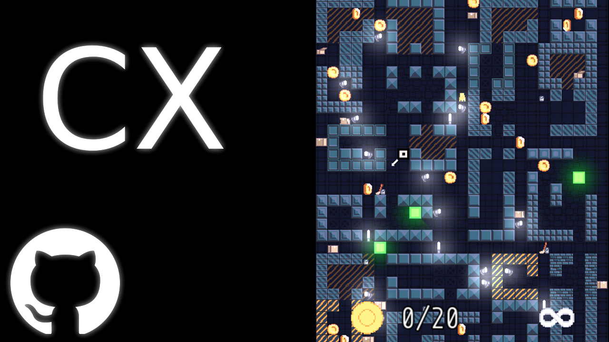

CX Library
Daniel Vishnevsky
About
Graphics library based on SFML to make writing SFML easier and more comfortable. It handles event boilerplate, a lot of the math and element positioning for the user. Made with C++ and SFML.
Features
This library is easily integratable with SFML. It features a lot of utility UI elements such as bars, buttons, circles, planes, rectangles, sprites, sliders, text and text input. It also has a wide variety of managers like asset, audio, navigation, particle and event manager.
To add it had a lot of utility. Easier to use vector2, vector3, vector4 and vector5 structs with loads of math functions built-in. A dedicated math library, raycasting, colors, camera handler and even a grid for easy element positioning.
The library gave the user multiple options for positioning - either position elements by the top-left corner, the center or the bottom-right corner. You could also position elements by a single side. Each UI element had loads of small utility functions that made life easier. There were also saveable styles for each element.
Development
I started making this somewhere in December of 2024 to make writing SFML games and UI easier and it was my first library ever. I rewrote Astral Surge in CX Library and eventually did the same with Pong to see its capabilities. Since I was working on different games in parallel, I could easily see what features were missing, which needed to be tweaked and which were useless.
And it did make my life easier. It's somewhere between SFML and Raylib in ease of use I'd say. I stopped developing it at the same time I stopped developing Astral Surge. You can see the source-code on Github and a few videos are available at my old Youtube channel. You can also check out the before mentioned Astral Surge and Pong games, since both of them were made with this library.
The main point of this library was to make doing any tiny thing really easy in SFML. It's kind of like TailwindCSS for CSS. The library's sole purpose was to make life easier and I feel like it server it well. I stopped development solely because I got tired from making it. I was developing it for half a year so no surprise.